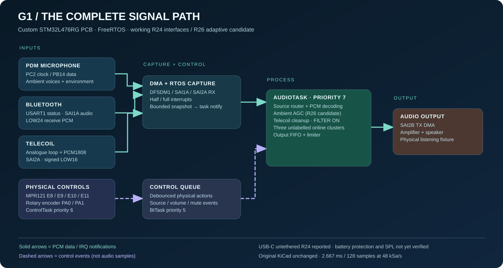

Software quality gates
GCC, Clang, sanitizers, portable C and source-integrity tests run in GitHub Actions. See the latest run for current status.
Open CI checks ↗A standalone custom-PCB audio system with operator-confirmed microphone, Bluetooth and LOW16 telecoil in R24. Explore original circuitry, FreeRTOS, R26 adaptive DSP and real device controls.
Inspect the mechanical assembly from every angle. Rotate, zoom and separate layers to look inside.
Switch the input source and trace how samples move through the embedded system.
External Bluetooth audio input and link observations.
SAI, DMA buffers and source arbitration.
Bounded audio processing and group profiles.
SAI audio output toward the external amplifier.
Explore the custom-PCB audio paths, bus ownership, DMA buffers, RTOS tasks and R26 candidate processing. Click a signal source, then select individual blocks.

No Nucleo, ST-LINK, serial console or tethered PC in operating mode. A phone is optional only as a Bluetooth audio source.
Two LiFePO₄ cells in series are the intended battery supply. Untethered R24 USB-C operation was reported; independent battery protection still needs testing.
FreeRTOS priority scheduling · 24-bit SAI receive words · PCM processing · DMA-driven output.
Select any block to inspect buffer ownership, processing or physical interface.
RX circular DMA → completed-half snapshot; source-specific signed PCM decoding.
Notify AudioTask only after publishing a complete buffer. AudioTask services the control FSM periodically.
Mono FIFO → L/R slot mapping → SAI2B TX DMA → amplifier / transducer.
Peripheral IRQs publish buffers, a high-priority audio task owns DSP state, and lower-priority work handles control and communications. Select a task to view its responsibilities and source.
R26 includes a three-cluster incremental scene learner and bounded user-feedback preferences. This browser control illustrates the concept; it is not live MCU telemetry. This demonstration stores nothing and does not claim that learning already runs on the PCB.
Simulation only.
R26 still requires a complete native GCC build, on-board acceptance, verified output limits and recorded timing. Its unsupervised clusters are not labelled car or speech recognition.
Explore the real KiCad design files. The gallery uses full-resolution SVG sheets when exported in the Pages build.
Read-only vector views exported from the unchanged original KiCad PCB; select a side, zoom, and pan.
ⓘ These are prototype design documents. Visualisation does not establish KiCad ERC/DRC, fabrication readiness, or electrical safety.
Browse selected production C modules directly from the public GitHub repository—no fabricated code screenshots.
Loading repository source…
A repeatable 19–20-minute black-box test: standalone startup, ambient mic, Bluetooth, telecoil, controls, adaptive response and recovery. No ST-LINK, Nucleo or serial monitor is needed.
Same source as the assessment PDF. Record actual observations; no mocked measurements or automatic PASS claims.
Loading the current source-backed test procedures…
The root CubeIDE firmware remains an earlier group baseline plus ported DSP modules. It is not the complete separately packaged custom-PCB R26 application.
A transparent view of what the project checks automatically—and what still needs real-world verification.
GCC, Clang, sanitizers, portable C and source-integrity tests run in GitHub Actions. See the latest run for current status.
Open CI checks ↗Real STM32 ARM build, bench playback, power integrity, acoustic output and custom PCB validation require separate measured evidence.
Release checklist ↗The KiCad source design exists, but external library resolution and complete ERC/DRC remain outstanding.
Hardware status ↗Browse implementation details, validation scripts, design files and the project history.